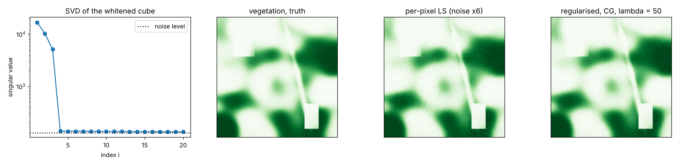
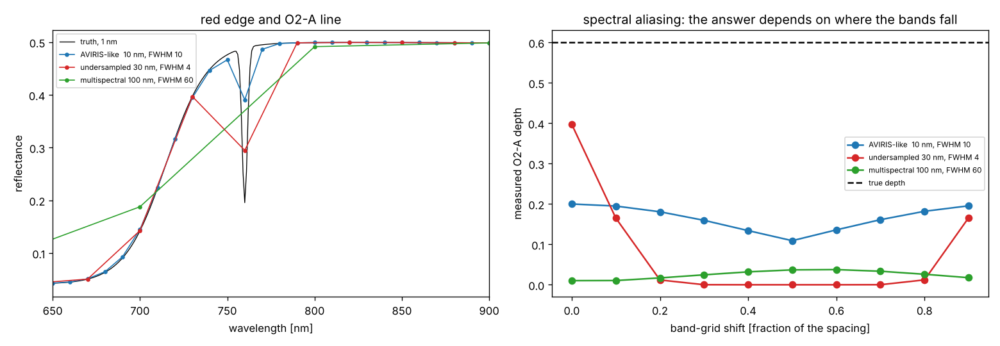
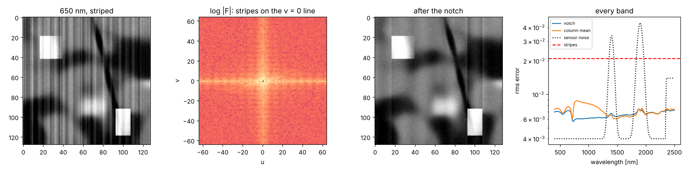
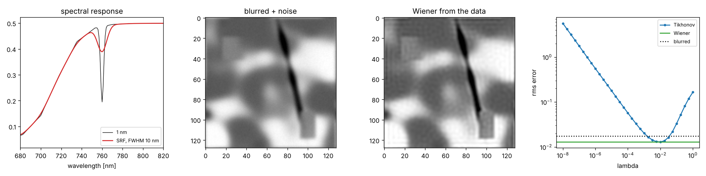
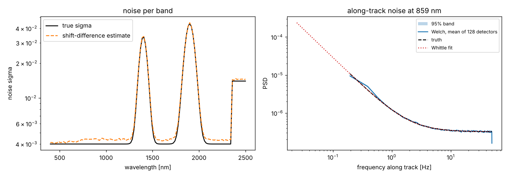
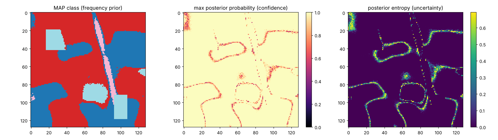
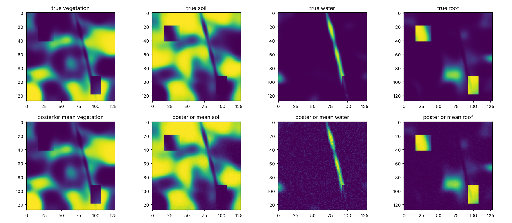
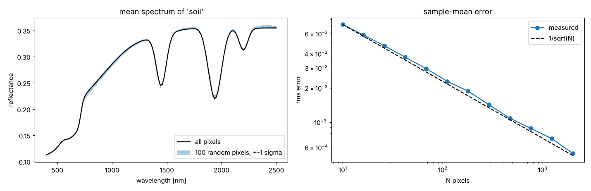
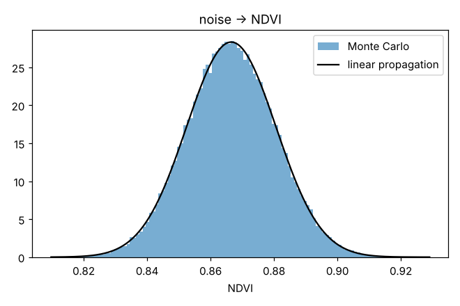

PROJECTObjective
Build, step by step, a complete analysis of a hyperspectral scene: treat the cube as a matrix and solve the unmixing least-squares problems (part 2), understand how the sensor samples the spectrum (part 3), clean detector artefacts (part 4), model the instrument response (part 5), measure the noise of every band (part 6), then classify pixels and estimate material fractions with honest error bars (parts 7–9).
PROJECTThe folder Hyperspectral Project
| file | what it does |
|---|---|
make_synthetic_cube.py | writes data/synthetic_cube.npz: 128×128 px, 120 bands 400–2500 nm, 4 materials with known abundances and noise per band |
get_hyperspectral_data.py | downloads real benchmark scenes (Indian Pines, Pavia University, Salinas) into data/ |
hsi_io.py | load(name) for every scene, band(wl, nm), rgb(cube, wl); creates figures/ |
hyperspectral_L04_06_linear.py | part 2 — unmixing as least squares, SVD of the cube, regularised unmixing with CG |
hyperspectral_L07_sampling.py | part 3 — band spacing, band width, spectral aliasing, bits |
hyperspectral_L08_destripe.py | part 4 — push-broom stripes and the 2D FFT |
hyperspectral_L09_response.py | part 5 — spectral response and PSF deconvolution |
hyperspectral_L10_noise.py | part 6 — noise per band, along-track spectrum, knee fit |
hyperspectral_L12_bayes.py | parts 7–8 — Bayes classifier, unmixing posterior, coverage |
hyperspectral_L13_mc.py | part 9 — Monte Carlo estimates and importance sampling |
PROJECTThe data
from hsi_io import load
d = load("synthetic") # or "indian_pines", "paviaU", "salinas"
cube, wl = d["cube"], d["wavelengths"] # (128, 128, 120), (120,)! read the cube written by numpy: np.asarray(cube, np.float64).tofile("cube.bin")
real(dp), allocatable :: cube(:,:,:)
allocate(cube(nb, nx, ny)) ! numpy C order (y, x, b) = Fortran (b, x, y)
open(10, file="cube.bin", access="stream", form="unformatted"); read(10) cube; close(10)| real scene | sensor | size | bands | classes |
|---|---|---|---|---|
| Indian Pines (Indiana, USA) | AVIRIS, airborne | 145×145 | 200 (400–2500 nm) | 16 crop types |
| Pavia University (Italy) | ROSIS, airborne | 610×340 | 103 (430–860 nm) | 9 urban materials |
| Salinas Valley (California) | AVIRIS | 512×217 | 204 | 16 vegetables and soils |
They come from the EHU (University of the Basque Country) archive of hyperspectral remote-sensing scenes. If a download link has moved, download the .mat files from the archive page in a browser and place them in data/. For space-borne data, PRISMA (ASI) and EnMAP (DLR) distribute scenes after free registration.
cd "Hyperspectral Project"
python make_synthetic_cube.py # the scene with known truth
python get_hyperspectral_data.py # Indian Pines (6 MB); add paviaU salinas for more
python hyperspectral_L04_06_linear.py # then L07, L08, L09, L10, L12, L13: figures go to figures/Ew, Yw = E / sig[:, None], Y / sig[:, None] # whiten the bands
c = scipy.linalg.cho_factor(Ew.T @ Ew) # 4 x 4, once
theta = scipy.linalg.cho_solve(c, Ew.T @ Yw) # all 16 384 pixels at onceG = matmul(transpose(Ew), Ew) ! 4 x 4
call dpotrf('L', 4, G, 4, info)
theta = matmul(transpose(Ew), Yw) ! 4 x npix right-hand sides
call dpotrs('L', 4, npix, G, 4, theta, 4, info)The SVD counts the materials
Centre the whitened cube (16 384 × 120) and take its SVD (0.25 s). With unit-variance noise, pure noise gives singular values ≈ √Npix = 128. Measured: 16 656, 10 301, 5 136, then 138, 138, 138, … — three components above the noise plus the mean: four materials. A rank-3 reconstruction is 6 times closer to the noiseless cube than the data (0.16 σ vs 1 σ): the SVD is a denoiser that knows nothing about the endmembers.
def mv(v):
th = v.reshape(4, H, W)
return (np.einsum("ij,jhw->ihw", G, th) + lam * neg_laplacian(th)).ravel()
A = scipy.sparse.linalg.LinearOperator((4*H*W, 4*H*W), matvec=mv)
theta, info = scipy.sparse.linalg.cg(A, rhs.ravel(), M=block_jacobi, rtol=1e-8)
"""
hyperspectral_L04_06_linear.py -- Lectures 4-6 (direct solvers, conditioning/SVD, sparse CG) on the cube.
Part 1 unmixing every pixel as a least-squares problem y = E theta + n (E: 120 bands x 4 endmembers):
normal equations + Cholesky, QR, SVD; noise weighting (divide each band by its sigma);
condition numbers kappa(E) and kappa(E^T E)
Part 2 SVD of the whole cube (pixels x bands, noise-whitened): how many singular values stand above
the noise? -> the number of materials; rank-4 reconstruction as a denoiser
Part 3 spatially regularised unmixing of the whole image at once:
min sum_p ||W (y_p - E theta_p)||^2 + lambda ||grad theta||^2
a sparse SPD system with 4 x 128 x 128 = 65 536 unknowns, solved matrix-free with
(block-Jacobi) preconditioned conjugate gradients
Run: python hyperspectral_L04_06_linear.py Figure: figures/L04_06_fig1.png
"""
import os
import time
import numpy as np
import scipy.linalg as la
import scipy.sparse.linalg as spla
import matplotlib
matplotlib.use("Agg")
import matplotlib.pyplot as plt
from hsi_io import load, FIG
d = load("synthetic")
cube, wl, E0, ab_true, sig = d["cube"].astype(float), d["wavelengths"], d["endmembers"], d["abundances"], d["noise_sigma"]
H, W, B = cube.shape
E = E0.T # bands x materials (120 x 4)
Y = cube.reshape(-1, B).T # bands x pixels
T = ab_true.reshape(-1, E.shape[1]).T # materials x pixels
rms = lambda a: np.sqrt(np.mean(a ** 2))
# ---------------------------------------------------------------- 1. per-pixel least squares
Ew = E / sig[:, None]; Yw = Y / sig[:, None] # whitening: every band in units of its noise
print("1. unmixing 16 384 pixels, 120 bands, 4 endmembers")
print(f" kappa(E) = {np.linalg.cond(E):.1f}, kappa(E^T E) = {np.linalg.cond(E.T @ E):.1f};"
f" whitened: kappa(W E) = {np.linalg.cond(Ew):.1f}")
res = {}
t0 = time.perf_counter(); c = la.cho_factor(Ew.T @ Ew); th = la.cho_solve(c, Ew.T @ Yw); res["normal eq. + Cholesky"] = (th, time.perf_counter() - t0)
t0 = time.perf_counter(); Q, R = la.qr(Ew, mode="economic"); th = la.solve_triangular(R, Q.T @ Yw); res["QR"] = (th, time.perf_counter() - t0)
t0 = time.perf_counter(); th = la.lstsq(Ew, Yw)[0]; res["SVD (lstsq)"] = (th, time.perf_counter() - t0)
t0 = time.perf_counter(); th = la.lstsq(E, Y)[0]; res["SVD, no noise weighting"] = (th, time.perf_counter() - t0)
for k, (th, t) in res.items():
print(f" {k:26s}: abundance rms error {rms(th - T):.4f} ({t * 1e3:6.1f} ms)")
Fisher = Ew.T @ Ew
print(" predicted posterior std sqrt(diag((W E)^T (W E))^-1):", np.round(np.sqrt(np.diag(la.inv(Fisher))), 4),
" measured:", np.round((res["QR"][0] - T).std(1), 4))
# ---------------------------------------------------------------- 2. SVD of the cube
X = (Yw - Yw.mean(1, keepdims=True)).T # pixels x bands, centred, noise-whitened
t0 = time.perf_counter(); U, s, Vt = la.svd(X, full_matrices=False); tsvd = time.perf_counter() - t0
noise_floor = np.sqrt(X.shape[0]) # a pure unit-variance noise matrix has sigma ~ sqrt(n_pixels)
above = int(np.sum(s > 1.5 * noise_floor))
print(f"\n2. SVD of the whitened cube (16 384 x 120) in {tsvd:.2f} s")
print(f" first singular values: {np.round(s[:7], 1)}; noise level sqrt(N_pix) = {noise_floor:.1f}")
print(f" {above} components stand above 1.5 x the noise level -> {above + 1} materials (the mean removed one dimension)")
for r in (1, 2, 3, 5, 10):
Xr = (U[:, :r] * s[:r]) @ Vt[:r]
clean = ((model := (E @ T)) / sig[:, None] - Yw.mean(1, keepdims=True)).T
print(f" rank-{r:2d} reconstruction: rms difference from the noiseless cube {rms(Xr - clean):.3f} (in noise sigmas; raw data: {rms(X - clean):.3f})")
# ---------------------------------------------------------------- 3. spatially regularised unmixing with CG
boost = 6.0 # make the noise 6x larger: regularisation matters
rng = np.random.default_rng(2)
Yn = E @ T + boost * sig[:, None] * rng.standard_normal(Y.shape)
Ewn = E / (boost * sig[:, None]); Ywn = Yn / (boost * sig[:, None])
G = Ewn.T @ Ewn # 4 x 4, the same for every pixel
rhs = Ewn.T @ Ywn # 4 x Npix
K = E.shape[1]; N = H * W
def lap(th): # th: K x H x W -> -Laplacian with Neumann boundaries (graph Laplacian)
out = np.zeros_like(th)
for ax in (1, 2):
dlt = np.diff(th, axis=ax)
sl_lo = [slice(None)] * 3; sl_hi = [slice(None)] * 3
sl_lo[ax] = slice(0, -1); sl_hi[ax] = slice(1, None)
out[tuple(sl_lo)] -= dlt; out[tuple(sl_hi)] += dlt
return out
def make_op(lam):
def mv(v):
th = v.reshape(K, H, W)
return (np.einsum("ij,jhw->ihw", G, th) + lam * lap(th)).ravel()
return spla.LinearOperator((K * N, K * N), matvec=mv, dtype=float)
Ginv = la.inv(G)
th_ls = (Ginv @ rhs) # per-pixel least squares
print(f"\n3. noise x {boost:.0f}: per-pixel least squares abundance rms error {rms(th_ls - T):.4f}")
for lam in (0.0, 1.0, 10.0, 50.0, 200.0):
A = make_op(lam)
# block-Jacobi preconditioner: (G + 4 lam I)^-1 per pixel (exact for lam = 0)
Pinv = la.inv(G + 4 * lam * np.eye(K))
M = spla.LinearOperator(A.shape, matvec=lambda v, P=Pinv: (P @ v.reshape(K, N)).ravel(), dtype=float)
it = [0]
cb = lambda xk: it.__setitem__(0, it[0] + 1)
t0 = time.perf_counter(); x, info = spla.cg(A, rhs.ravel(), rtol=1e-8, maxiter=5000, M=M, callback=cb); t = time.perf_counter() - t0
it_p = it[0]; it[0] = 0
x2, _ = spla.cg(A, rhs.ravel(), rtol=1e-8, maxiter=5000, callback=cb); it_n = it[0]
print(f" lambda = {lam:6.1f}: rms error {rms(x.reshape(K, N) - T):.4f}; CG iterations {it_n:4d} plain, {it_p:4d} block-Jacobi ({t * 1e3:.0f} ms)")
if lam == 50.0:
th_reg = x.reshape(K, H, W)
fig, ax = plt.subplots(1, 4, figsize=(16, 3.8))
ax[0].semilogy(np.arange(1, 21), s[:20], "o-"); ax[0].axhline(noise_floor, color="k", ls=":", label="noise level")
ax[0].set(xlabel="index i", ylabel="singular value", title="SVD of the whitened cube"); ax[0].legend()
ax[1].imshow(T[0].reshape(H, W), vmin=0, vmax=1, cmap="Greens"); ax[1].set_title("vegetation, truth")
ax[2].imshow(th_ls[0].reshape(H, W), vmin=0, vmax=1, cmap="Greens"); ax[2].set_title(f"per-pixel LS (noise x{boost:.0f})")
ax[3].imshow(th_reg[0], vmin=0, vmax=1, cmap="Greens"); ax[3].set_title("regularised, CG, lambda = 50")
for a in ax[1:]: a.set_xticks([]); a.set_yticks([])
fig.tight_layout(); fig.savefig(os.path.join(FIG, "L04_06_fig1.png"), dpi=120)
print("saved figures/L04_06_fig1.png")W = np.exp(-0.5*((lam[None, :] - centres[:, None]) / s)**2)
bands = (W * spectrum).sum(1) / W.sum(1)do j = 1, nb
w = exp(-0.5_dp*((lam - centres(j))/s)**2)
bands(j) = sum(w*spectrum)/sum(w)
end doResults (hyperspectral_L07_sampling.py)
| sensor | O2-A depth over 10 grid phases (truth 0.60) | reconstruction rms |
|---|---|---|
| AVIRIS-like: Δλ 10 nm, FWHM 10 nm | 0.11 – 0.20 (smoothed, stable) | 0.0074 |
| undersampled: Δλ 30 nm, FWHM 4 nm | 0.00 – 0.40 (aliased: depends on the phase) | 0.0187 |
| multispectral: Δλ 100 nm, FWHM 60 nm | 0.01 – 0.04 (line invisible) | 0.0332 |

Quantisation: rounding reflectance in [0, 1] to B bits adds Δ/√12 = 2−B/√12. With 6 bits (4.5×10⁻³) this is as large as the sensor noise (4×10⁻³); with 8 bits it is 1.1×10⁻³, negligible. Real sensors digitise radiance with 12–16 bits because bright snow and dark water must fit in the same range.
"""
hyperspectral_L07_sampling.py -- Lecture 7 (sampling, quantisation, aliasing) applied to spectra.
A hyperspectral sensor SAMPLES a continuous spectrum: each band integrates the light over its
spectral response function (SRF, ~Gaussian of width FWHM) centred every `spacing` nm.
That is exactly sampling + an anti-alias filter, along wavelength instead of time.
Part 1 a 1-nm "true" spectrum (vegetation + narrow O2-A line at 760 nm + a 2200-nm mineral dip)
observed by three sensors: AVIRIS-like (10 nm / FWHM 10), undersampled (30 nm / FWHM 4)
and multispectral (100 nm / FWHM 60).
Part 2 "sampling phase": shift the band grid by a fraction of the spacing. If FWHM << spacing
the measured depth of a narrow line depends on where the bands fall: spectral aliasing.
Part 3 reconstruction error (linear interpolation back to 1 nm) for each sensor.
Part 4 quantisation: bits per band against the sensor noise of the synthetic cube.
Run: python hyperspectral_L07_sampling.py Figures: figures/L07_fig1.png
"""
import os
import numpy as np
import matplotlib
matplotlib.use("Agg")
import matplotlib.pyplot as plt
from hsi_io import load, FIG
# ---------------------------------------------------------------- 1. the true spectrum, 1 nm
lam = np.arange(400.0, 2501.0, 1.0)
g = lambda x, m, s: np.exp(-0.5 * ((x - m) / s) ** 2)
sig = lambda x, x0, k: 1 / (1 + np.exp(-(x - x0) / k))
truth = ((0.04 + 0.06 * g(lam, 550, 35) + 0.46 * sig(lam, 715, 12) - 0.20 * sig(lam, 1300, 80)
- 0.08 * sig(lam, 2000, 90)) * (1 - 0.55 * g(lam, 1450, 45) - 0.75 * g(lam, 1940, 60))
* (1 - 0.25 * g(lam, 2200, 6))) # narrow mineral feature
no_line = truth.copy()
truth = truth * (1 - 0.6 * g(lam, 760, 1.5)) # O2-A absorption: ~3.5 nm wide
def observe(centres, fwhm, spec=None):
"""Each band = SRF-weighted mean of the spectrum (a convolution, then sampling)."""
spec = truth if spec is None else spec
s = fwhm / 2.3548
W = g(lam[None, :], centres[:, None], s)
return (W * spec).sum(1) / W.sum(1)
def line_depth(centres, fwhm):
"""Largest fractional dip that the O2 line causes in any band: 1 - band / same band without the line."""
return np.max(1 - observe(centres, fwhm) / observe(centres, fwhm, no_line))
sensors = {"AVIRIS-like 10 nm, FWHM 10": (10.0, 10.0),
"undersampled 30 nm, FWHM 4 ": (30.0, 4.0),
"multispectral 100 nm, FWHM 60": (100.0, 60.0)}
print("1-3. three sensors looking at the same 1-nm spectrum")
print(f" true O2-A depth at 760 nm: {np.max(1 - truth / no_line):.3f}")
fig, ax = plt.subplots(1, 2, figsize=(13, 4.5))
ax[0].plot(lam, truth, "k", lw=0.8, label="truth, 1 nm")
for (name, (sp, fw)), col in zip(sensors.items(), ["C0", "C3", "C2"]):
depths = []
for phase in np.linspace(0, 1, 11)[:-1]: # shift the band grid
c = np.arange(400 + phase * sp, 2500, sp)
depths.append(line_depth(c, fw))
c = np.arange(400, 2500, sp); v = observe(c, fw)
rec = np.interp(lam, c, v)
rms = np.sqrt(np.mean((rec - truth)[(lam > 450) & (lam < 2450)] ** 2))
print(f" {name}: O2 depth {min(depths):.3f} .. {max(depths):.3f} over 10 grid phases,"
f" reconstruction rms {rms:.4f}")
ax[0].plot(c, v, "o-", ms=3, lw=1, color=col, label=name)
ax[1].plot(np.linspace(0, 1, 11)[:-1], depths, "o-", color=col, label=name)
ax[0].set(xlabel="wavelength [nm]", ylabel="reflectance", xlim=(650, 900), title="red edge and O2-A line")
ax[0].legend(fontsize=7)
ax[1].axhline(np.max(1 - truth / no_line), color="k", ls="--", label="true depth")
ax[1].set(xlabel="band-grid shift [fraction of the spacing]", ylabel="measured O2-A depth",
title="spectral aliasing: the answer depends on where the bands fall")
ax[1].legend(fontsize=7)
fig.tight_layout(); fig.savefig(os.path.join(FIG, "L07_fig1.png"), dpi=120)
# ---------------------------------------------------------------- 4. quantisation vs sensor noise
d = load("synthetic")
sigma_min = d["noise_sigma"].min()
print("\n4. quantisation of reflectance in [0, 1] with B bits: rms error Delta/sqrt(12)")
for B in (6, 8, 10, 12, 14):
delta = 1 / 2 ** B
q = delta * np.round(d["cube"][..., 30] / delta)
meas = np.std(q - d["cube"][..., 30])
print(f" B = {B:2d}: Delta/sqrt(12) = {delta / np.sqrt(12):.2e} (measured {meas:.2e});"
f" vs smallest sensor noise {sigma_min:.1e}: {'negligible' if delta / np.sqrt(12) < 0.3 * sigma_min else 'NOT negligible'}")
print(" Real sensors digitise RADIANCE with 12-16 bits: bright snow and dark water must both fit.")
print("saved L07_fig1.png")F = np.fft.fft2(img)
u = np.fft.fftfreq(nx) * nx
F[0, np.abs(u) > keep] = 0 # the v = 0 row of the unshifted spectrum
clean = np.real(np.fft.ifft2(F))call fftw_execute_dft(pf, img_c, F)
do i = 1, nx ! F(i, j): i along x (u), j along y (v); j = 1 is v = 0
if (abs(u(i)) > keep) F(i, 1) = 0
end do
call fftw_execute_dft(pb, F, img_c); img = real(img_c)/(nx*ny)Results (hyperspectral_L08_destripe.py, 650 nm, stripe rms 0.021, sensor noise 0.004)
| destriper | rms error vs the clean band |
|---|---|
| none | 0.0211 |
| notch on v = 0, keep |u| ≤ 8 | 0.0072 |
| column mean − smoothed column mean (15 px) | 0.0078 |
| periodic notch only (8-column module) | 0.0157 |
Over all 120 bands the notch leaves a median error of 0.0066, close to the sensor noise. The remaining error is the slow random part of the stripes (|u| ≤ 8), indistinguishable from real structure that varies only across the track.

"""
hyperspectral_L08_destripe.py -- Lecture 8 (2D FFT, notch filters) applied to a push-broom band.
A push-broom imager has one detector per image COLUMN. Unequal gains/offsets between detectors
give vertical stripes: a pattern that depends on x only, constant along y.
In the 2D spectrum a function of x only lives on the line v = 0 (the u axis): a notch along that
line (keeping the lowest |u|, which carry real large-scale structure) removes the stripes.
Part 1 add column offsets (random + a periodic 8-column module pattern) to the 650-nm band
Part 2 2D FFT: where does the stripe energy go?
Part 3 three destripers: notch on v = 0, column-mean subtraction, and their rms errors
Part 4 the same on every band: rms error before/after, worst band
Run: python hyperspectral_L08_destripe.py Figures: figures/L08_fig1.png
"""
import os
import numpy as np
import matplotlib
matplotlib.use("Agg")
import matplotlib.pyplot as plt
from scipy.ndimage import uniform_filter1d
from hsi_io import load, band, FIG
d = load("synthetic")
cube, wl = d["cube"].astype(float), d["wavelengths"]
H, W, B = cube.shape
rng = np.random.default_rng(3)
cols = np.arange(W)
stripe = 0.015 * rng.standard_normal(W) + 0.02 * np.cos(2 * np.pi * cols / 8) # per-column offset
def notch_v0(img, keep=8, width=0.3):
"""Suppress the v = 0 line of the 2D spectrum except |u| <= keep (Gaussian in v, both signs)."""
F = np.fft.fft2(img)
v = np.fft.fftfreq(img.shape[0]) * img.shape[0] # cycles per image, rows
u = np.fft.fftfreq(img.shape[1]) * img.shape[1] # columns
Hn = 1 - np.exp(-v[:, None] ** 2 / (2 * width ** 2)) * (np.abs(u[None, :]) > keep)
return np.real(np.fft.ifft2(F * Hn))
def notch_periodic(img, period=8, width=0.3):
"""Remove only the periodic module pattern: spikes at u = +-k W/period on the v = 0 line."""
F = np.fft.fft2(img)
v = np.fft.fftfreq(img.shape[0]) * img.shape[0]
u = np.fft.fftfreq(img.shape[1]) * img.shape[1]
Hn = np.ones(F.shape)
for u0 in np.arange(1, period) * img.shape[1] / period:
for s in (u0, -u0):
Hn *= 1 - np.exp(-(v[:, None] ** 2 + (u[None, :] - s) ** 2) / (2 * width ** 2))
return np.real(np.fft.ifft2(F * Hn))
def column_mean(img, smooth=15):
"""Classic destriper: subtract each column's mean minus a smoothed version of the column means."""
m = img.mean(0)
return img - (m - uniform_filter1d(m, smooth, mode="reflect"))[None, :]
rms = lambda a: np.sqrt(np.mean(a ** 2))
b = band(wl, 650)
clean = cube[..., b]
striped = clean + stripe[None, :]
F = np.fft.fftshift(np.abs(np.fft.fft2(striped - striped.mean())))
F0 = np.fft.fftshift(np.abs(np.fft.fft2(clean - clean.mean())))
e_line = (F[H // 2, :] ** 2).sum() / (F ** 2).sum()
e_line0 = (F0[H // 2, :] ** 2).sum() / (F0 ** 2).sum()
print("1-2. 650-nm band with column stripes")
print(f" fraction of spectral power on the v = 0 line: clean {e_line0:.3f}, striped {e_line:.3f}")
outs = {"striped": striped, "notch v=0, |u|>8": notch_v0(striped), "column mean": column_mean(striped),
"periodic notch": notch_periodic(striped)}
print("3. rms error against the clean band (noise sigma there "
f"{d['noise_sigma'][b]:.4f}, stripe rms {rms(stripe):.4f})")
for k, v in outs.items():
print(f" {k:16s}: {rms(v - clean):.4f}")
print(" the v = 0 notch and the column-mean destriper are the same operation (one in Fourier space):")
print(" both remove every column pattern above |u| ~ 8; the periodic notch removes only the module pattern.")
print("4. every band")
before = np.array([rms(stripe) for _ in range(B)])
after_n = np.array([rms(notch_v0(cube[..., j] + stripe[None, :]) - cube[..., j]) for j in range(B)])
after_c = np.array([rms(column_mean(cube[..., j] + stripe[None, :]) - cube[..., j]) for j in range(B)])
print(f" notch: median {np.median(after_n):.4f}, worst {after_n.max():.4f} at {wl[after_n.argmax()]:.0f} nm;"
f" column mean: median {np.median(after_c):.4f}")
fig, ax = plt.subplots(1, 4, figsize=(16, 4))
lo, hi = np.percentile(clean, (1, 99))
ax[0].imshow(striped, cmap="gray", vmin=lo, vmax=hi); ax[0].set_title("650 nm, striped")
ax[1].imshow(np.log10(F + 1e-6), cmap="magma", extent=(-W / 2, W / 2, -H / 2, H / 2))
ax[1].set_title("log |F|: stripes on the v = 0 line"); ax[1].set_xlabel("u"); ax[1].set_ylabel("v")
ax[2].imshow(outs["notch v=0, |u|>8"], cmap="gray", vmin=lo, vmax=hi); ax[2].set_title("after the notch")
ax[3].plot(wl, after_n, label="notch"); ax[3].plot(wl, after_c, label="column mean")
ax[3].plot(wl, d["noise_sigma"], "k:", label="sensor noise"); ax[3].axhline(rms(stripe), color="r", ls="--", label="stripes")
ax[3].set(xlabel="wavelength [nm]", ylabel="rms error", yscale="log", title="every band"); ax[3].legend(fontsize=7)
fig.tight_layout(); fig.savefig(os.path.join(FIG, "L08_fig1.png"), dpi=120)
print("saved L08_fig1.png")k = np.exp(-0.5*(np.arange(-30, 31)/s)**2); k /= k.sum()
conv = np.convolve(np.pad(spec, 30, mode="reflect"), k, mode="valid")
Hk = np.exp(-2*np.pi**2*sig_psf**2*(fx**2 + fy**2)) # Gaussian PSF in Fourier space
xhat = np.real(np.fft.ifft2(Phi * np.fft.fft2(y) / Hk))! spectral: overlap-save from Lesson 9 with a centred kernel (m_minus = 30)
call overlap_save(spec_padded, k, 512, 30, conv)
! spatial: Xk = phi*Yk/Hk with a 2D FFTW planResults (hyperspectral_L09_response.py)
- SRF of FWHM 10 nm: FFT and
np.convolveagree to 4×10⁻¹⁶; the O2-A dip drops from 0.59 (1 nm) to 0.17. Zero vs reflect boundary differ by 0.018 in the first 30 nm, not at all inside. - 860-nm band, Gaussian PSF σ = 1.5 px, noise 0.003: rms error blurred 0.0176, plain inverse 3×10⁵, best Tikhonov 0.0130 (needs the truth), Wiener from the data 0.0129. Noise floor read from |Y|²: 8.9×10⁻⁶ (true 9.0×10⁻⁶).

"""
hyperspectral_L09_response.py -- Lecture 9 (convolution, deconvolution) applied to a cube.
Two convolutions blur every hyperspectral measurement:
* along WAVELENGTH, the spectral response function (SRF) of each band;
* in SPACE, the point-spread function (PSF) of the optics and the detector.
Part 1 spectral: a 1-nm spectrum convolved with a Gaussian SRF (FWHM 10 nm) by np.convolve and
by FFT with zero padding; boundary choice (zero vs reflect) at the ends of the range.
Part 2 spatial: the 860-nm band blurred by a Gaussian PSF (sigma 1.5 px) plus noise,
then deconvolved: plain inverse, best Tikhonov lambda (needs the truth),
and Wiener with the noise floor read from the data.
Run: python hyperspectral_L09_response.py Figures: figures/L09_fig1.png
"""
import os
import numpy as np
import matplotlib
matplotlib.use("Agg")
import matplotlib.pyplot as plt
from scipy.fft import next_fast_len
from hsi_io import load, band, FIG
g = lambda x, m, s: np.exp(-0.5 * ((x - m) / s) ** 2)
rms = lambda a: np.sqrt(np.mean(a ** 2))
# ---------------------------------------------------------------- 1. spectral response
lam = np.arange(400.0, 2501.0, 1.0)
d = load("synthetic")
spec = np.interp(lam, d["wavelengths"], d["endmembers"][0]) * (1 - 0.6 * g(lam, 760, 1.5))
fwhm = 10.0; s = fwhm / 2.3548
k = g(np.arange(-30, 31), 0, s); k /= k.sum() # centred kernel, M = 61, m+ = m- = 30
M = k.size; m = (M - 1) // 2
direct = np.convolve(spec, k, mode="same") # zero boundary
nfft = next_fast_len(spec.size + M - 1)
fft = np.fft.irfft(np.fft.rfft(spec, nfft) * np.fft.rfft(k, nfft), nfft)[m:m + spec.size]
padded = np.pad(spec, m, mode="reflect")
refl = np.convolve(padded, k, mode="valid")
print("1. SRF convolution (FWHM 10 nm), 2101 samples, kernel M = 61")
print(f" FFT vs np.convolve (both zero boundary): max diff {np.abs(fft - direct).max():.1e}")
print(f" zero vs reflect boundary: differ by {np.abs(direct - refl)[:m].max():.3f} in the first {m} nm,"
f" {np.abs(direct - refl)[m:-m].max():.1e} inside")
print(f" O2-A dip: {1 - spec[360] / np.interp(760, [740, 780], spec[[340, 380]]):.2f} at 1 nm,"
f" {1 - refl[360] / np.interp(760, [740, 780], refl[[340, 380]]):.2f} after the SRF")
# ---------------------------------------------------------------- 2. spatial PSF and deconvolution
b = band(d["wavelengths"], 860)
x = d["cube"][..., b].astype(float)
H, W = x.shape
fy, fx = np.fft.fftfreq(H)[:, None], np.fft.fftfreq(W)[None, :]
sig_psf = 1.5
Hk = np.exp(-2 * np.pi ** 2 * sig_psf ** 2 * (fx ** 2 + fy ** 2)) # transform of a Gaussian PSF
rng = np.random.default_rng(1)
noise = 0.003
y = np.real(np.fft.ifft2(np.fft.fft2(x) * Hk)) + noise * rng.standard_normal(x.shape)
Y = np.fft.fft2(y)
inv = np.real(np.fft.ifft2(Y / Hk))
lams = 10.0 ** np.arange(-8, 0.01, 0.25)
errs = [rms(np.real(np.fft.ifft2(np.conj(Hk) * Y / (np.abs(Hk) ** 2 + l))) - x) for l in lams]
# Wiener: radially averaged |Y|^2, noise floor from the outer frequencies, cutoff where the signal sinks
P = np.abs(Y) ** 2 / (H * W)
r = np.sqrt(fx ** 2 + fy ** 2)
edges = np.linspace(0, r.max(), 40)
idx = np.digitize(r, edges) - 1
Prad = np.array([P[idx == i].mean() for i in range(len(edges) - 1)])
Sn = np.median(P[r > 0.4]) / np.log(2) # median of an exponential = ln2 x mean
rc = edges[np.argmax(Prad < 2 * Sn)]
Phi = np.clip((np.interp(r, 0.5 * (edges[1:] + edges[:-1]), Prad) - Sn)
/ np.interp(r, 0.5 * (edges[1:] + edges[:-1]), Prad), 0, 1) * (r < rc)
wien = np.real(np.fft.ifft2(Phi * Y / Hk))
print("\n2. 860-nm band, Gaussian PSF sigma 1.5 px, noise 0.003")
print(f" rms error: blurred {rms(y - x):.4f}, plain inverse {rms(inv - x):.1e},"
f" best Tikhonov {min(errs):.4f} (lambda 1e{np.log10(lams[int(np.argmin(errs))]):.2f}),"
f" Wiener from the data {rms(wien - x):.4f}")
print(f" noise floor read from |Y|^2: {Sn:.2e} (true {noise ** 2:.2e}); cutoff at {rc:.2f} cycles/px")
fig, ax = plt.subplots(1, 4, figsize=(16, 4))
ax[0].plot(lam, spec, "k", lw=0.8, label="1 nm"); ax[0].plot(lam, refl, "C3", label="SRF, FWHM 10 nm")
ax[0].set(xlim=(680, 820), xlabel="wavelength [nm]", title="spectral response"); ax[0].legend(fontsize=8)
lo, hi = np.percentile(x, (1, 99))
for a, im, t in zip(ax[1:3], (y, wien), ("blurred + noise", "Wiener from the data")):
a.imshow(im, cmap="gray", vmin=lo, vmax=hi); a.set_title(t)
ax[3].loglog(lams, errs, "o-", ms=3, label="Tikhonov"); ax[3].axhline(rms(wien - x), color="C2", label="Wiener")
ax[3].axhline(rms(y - x), color="k", ls=":", label="blurred"); ax[3].set(xlabel="lambda", ylabel="rms error"); ax[3].legend(fontsize=8)
fig.tight_layout(); fig.savefig(os.path.join(FIG, "L09_fig1.png"), dpi=120)
print("saved L09_fig1.png")d2 = cube[:, 2:] - 2*cube[:, 1:-1] + cube[:, :-2]
sig = 1.4826 * np.median(np.abs(d2 - np.median(d2, (0, 1))), (0, 1)) / np.sqrt(6)d2 = cube(:, 3:nx, :) - 2*cube(:, 2:nx-1, :) + cube(:, 1:nx-2, :)
! per band: median of |d2 - median(d2)| (sort, or a selection algorithm)Results (hyperspectral_L10_noise.py)
- σ̂/σ: first difference median 1.17 (max 1.51: scene gradients leak in); second difference median 1.07 (0.99–1.12).
- SNR from 81 (1212 nm) down to 4.5 (1918 nm): 2 bands below 5 — drop or down-weight them.
- Along track at 859 nm, 128 detectors × 4096 rows with a drift (fk = 2 Hz, α = 1.5): Welch L = 512, ν ≈ 3650, band 0.956–1.048, truth inside in 93% of bins.
- Whittle on the 128 column periodograms: σ² = 1.604×10⁻⁵ (true 1.600×10⁻⁵), fk = 2.00 Hz, α = 1.501 (true 1.5). Averaging more than 1/fk = 0.5 s (50 rows) no longer beats down the drift.

"""
hyperspectral_L10_noise.py -- Lecture 10 (spectral estimation) applied to the noise of a cube.
Every later step (Bayes classifier, unmixing, Monte Carlo) needs the noise of each band.
Part 1 sigma per band from the data alone: the shift-difference estimator
sigma ~ std(x[i, j+1] - x[i, j]) / sqrt(2) (scene texture is smooth, noise is not),
compared with the true sigma of the synthetic cube. SNR per band.
Part 2 along-track noise spectrum: a push-broom records one row per time step, so each column
is a TIME SERIES. Add a slow 1/f drift to every detector, take the residual
(data - model) along the track and estimate its spectrum with Welch and a chi^2 band.
Part 3 fit sigma^2, f_k, alpha with the Whittle likelihood on the column periodograms.
Run: python hyperspectral_L10_noise.py Figures: figures/L10_fig1.png
"""
import os
import numpy as np
import matplotlib
matplotlib.use("Agg")
import matplotlib.pyplot as plt
from scipy.signal import welch
from scipy.stats import chi2
from scipy.optimize import minimize
from hsi_io import load, band, FIG
d = load("synthetic")
cube, wl, sig_true = d["cube"].astype(float), d["wavelengths"], d["noise_sigma"]
H, W, B = cube.shape
model = d["abundances"] @ d["endmembers"]
# ---------------------------------------------------------------- 1. sigma per band from the data
mad = lambda a: np.median(np.abs(a - np.median(a, axis=(0, 1))), axis=(0, 1)) * 1.4826
d1 = np.diff(cube, axis=1) # x[j+1] - x[j]: variance 2 sigma^2
d2 = cube[:, 2:] - 2 * cube[:, 1:-1] + cube[:, :-2] # second difference: variance 6 sigma^2, kills gradients
sig1 = mad(d1) / np.sqrt(2)
sig_hat = mad(d2) / np.sqrt(6)
print("1. noise per band from shift differences (robust MAD)")
print(f" first difference : sigma_hat / sigma_true median {np.median(sig1 / sig_true):.3f}, max {np.max(sig1 / sig_true):.3f}"
" (scene gradients leak in)")
ratio = sig_hat / sig_true
print(" second difference:", end="")
print(f" sigma_hat / sigma_true: median {np.median(ratio):.3f}, range {ratio.min():.3f} .. {ratio.max():.3f}")
snr = cube.mean((0, 1)) / sig_hat
print(f" SNR: best {snr.max():.0f} at {wl[snr.argmax()]:.0f} nm, worst {snr.min():.1f} at {wl[snr.argmin()]:.0f} nm"
f" -> {np.sum(snr < 5)} bands with SNR < 5 (the water-vapour bands: drop or down-weight them)")
# ---------------------------------------------------------------- 2. along-track spectrum with a 1/f drift
line_rate = 100.0 # rows per second
b = band(wl, 860)
rng = np.random.default_rng(5)
sigma2, fk, alpha = sig_true[b] ** 2, 2.0, 1.5 # truth of the drift we add
n = 1 << 12 # a long acquisition: 4096 rows
f = np.fft.rfftfreq(n, 1 / line_rate)
S = np.zeros_like(f); S[1:] = 2 * sigma2 / line_rate * (fk / f[1:]) ** alpha # one-sided PSD of the drift
X = np.sqrt(n * line_rate * S / 4) * (rng.standard_normal((W, f.size)) + 1j * rng.standard_normal((W, f.size)))
drift = np.fft.irfft(X, n, axis=1) # one drift per detector (column)
white = sig_true[b] * rng.standard_normal((W, n))
resid = drift + white # data - model along the track, every column
fw, Pw = welch(resid, fs=line_rate, window="hann", nperseg=512, axis=1)
Pm = Pw.mean(0) # average over the 128 detectors too
K = (n - 512) // 256 + 1
nu = 2 * 0.95 * K * W
lo, hi = nu / chi2.ppf(0.975, nu), nu / chi2.ppf(0.025, nu)
Strue = 2 * sigma2 / line_rate * (1 + (fk / np.maximum(fw, 1e-9)) ** alpha)
inside = np.mean((Strue[1:] >= Pm[1:] * lo) & (Strue[1:] <= Pm[1:] * hi))
print(f"\n2. along-track residual at {wl[b]:.0f} nm, 128 detectors x 4096 rows at {line_rate:.0f} lines/s")
print(f" Welch L = 512, K = {K} per detector, nu ~ {nu:.0f}: band {lo:.3f} .. {hi:.3f}; truth inside in {100 * inside:.0f}% of bins")
# ---------------------------------------------------------------- 3. Whittle fit of the knee
fp = np.fft.rfftfreq(n, 1 / line_rate)[1:-1]
Pp = (2 * np.abs(np.fft.rfft(resid, axis=1)) ** 2 / (n * line_rate))[:, 1:-1]
def nll(th):
s2, lfk, a = th
Sm = 2 * np.exp(s2) / line_rate * (1 + (np.exp(lfk) / fp) ** a)
return np.sum(np.log(Sm)) * W + np.sum(Pp / Sm)
res = minimize(nll, [np.log(sigma2 * 0.5), np.log(1.0), 1.0], method="Nelder-Mead", options=dict(maxiter=4000, xatol=1e-6, fatol=1e-6))
s2h, fkh, ah = np.exp(res.x[0]), np.exp(res.x[1]), res.x[2]
print(f"3. Whittle on {W} column periodograms: sigma^2 {s2h:.3e} (true {sigma2:.3e}), f_k {fkh:.2f} Hz (true {fk}),"
f" alpha {ah:.3f} (true {alpha})")
print(f" -> averaging more than ~1/f_k = {1 / fkh:.1f} s of rows ({line_rate / fkh:.0f} lines) no longer beats down the drift")
fig, ax = plt.subplots(1, 2, figsize=(12, 4.2))
ax[0].semilogy(wl, sig_true, "k", label="true sigma"); ax[0].semilogy(wl, sig_hat, "C1--", label="shift-difference estimate")
ax[0].set(xlabel="wavelength [nm]", ylabel="noise sigma", title="noise per band"); ax[0].legend()
ax[1].fill_between(fw[1:], Pm[1:] * lo, Pm[1:] * hi, alpha=0.3, label="95% band")
ax[1].loglog(fw[1:], Pm[1:], label="Welch, mean of 128 detectors"); ax[1].loglog(fw[1:], Strue[1:], "k--", label="truth")
ax[1].loglog(fp, 2 * s2h / line_rate * (1 + (fkh / fp) ** ah), "C3:", label="Whittle fit")
ax[1].set(xlabel="frequency along track [Hz]", ylabel="PSD", title=f"along-track noise at {wl[b]:.0f} nm"); ax[1].legend(fontsize=8)
fig.tight_layout(); fig.savefig(os.path.join(FIG, "L10_fig1.png"), dpi=120)
print("saved L10_fig1.png")lp = loglike + np.log(prior) # (n_pixels, n_classes)
lp -= lp.max(1, keepdims=True)
post = np.exp(lp); post /= post.sum(1, keepdims=True)
label_map = post.argmax(1) # MAP classdo i = 1, npix
lp(:,i) = loglike(:,i) + log(prior)
lp(:,i) = exp(lp(:,i) - maxval(lp(:,i)))
lp(:,i) = lp(:,i) / sum(lp(:,i))
end doResults (hyperspectral_L12_bayes.py, synthetic cube)
| prior | accuracy | recall veg / soil / water / roof |
|---|---|---|
| flat | 95.2% | 94 / 95 / 88 / 100% |
| class frequency | 95.6% | 94 / 96 / 87 / 100% |
The frequency prior raises the overall accuracy and lowers the recall of the rare class (water): it trades rare-class detection for the majority — the base-rate effect of Lesson 12 on a map.

figures/L12_fig0_data.png: describe the red edge of vegetation and the water-vapour bands.python hyperspectral_L12_bayes.py indian_pines. Accuracy drops: give three reasons (16 classes, similar crops, few training pixels, non-Gaussian classes).AtCA = A.T @ (A / sig[:, None]**2)
Sigma = np.linalg.inv(AtCA + P0inv)
theta_bar = (X / sig**2) @ A @ Sigma + (P0inv @ th0) @ Sigma # all pixels at onceAtCA = matmul(transpose(A), A / spread(sig**2, 2, K))
Sigma = inverse(AtCA + P0inv) ! LAPACK dgesv / dpotri
thbar = matmul(Sigma, matmul(transpose(A), y/sig**2) + matmul(P0inv, th0))Results (hyperspectral_L12_bayes.py)
| material | posterior std | rms error vs truth | coverage of ±1σ |
|---|---|---|---|
| vegetation | 0.0035 | 0.0035 | 68.8% |
| soil | 0.0099 | 0.0099 | 68.4% |
| water | 0.0572 | 0.0571 | 68.3% |
| roof | 0.0136 | 0.0136 | 68.4% |
The posterior std equals the actual rms error and ±1σ covers the truth 68% of the time: the Bayesian error bars pass a frequentist test. A Gaussian prior N(¼, 0.3²) changes them only slightly (water 0.0562).

"""
hyperspectral_L12_bayes.py -- Lecture 12 (Bayesian inference) applied to a hyperspectral cube.
Part 0 look at the data: RGB composite, labels, mean spectrum of each class
Part 1 Bayes classifier: Gaussian likelihood per class (in PCA space) x prior
-> posterior probability of every class in every pixel, MAP class map.
Flat prior versus "class frequency" prior: watch the rare class!
Part 2 linear mixing model y = A theta + n (Lecture 12, appendix C: everything exact)
-> posterior mean and std of the abundances in every pixel,
flat prior vs Gaussian prior, and a COVERAGE check against the truth.
Run: python hyperspectral_L12_bayes.py (synthetic cube)
python hyperspectral_L12_bayes.py indian_pines (Part 0-1 only: no true abundances)
Figures: figures/L12_fig*.png
"""
import sys
import os
import numpy as np
import matplotlib
matplotlib.use("Agg")
import matplotlib.pyplot as plt
from hsi_io import load, rgb, FIG
scene = sys.argv[1] if len(sys.argv) > 1 else "synthetic"
d = load(scene)
cube, wl, labels, names = d["cube"], d["wavelengths"], d["labels"], d["names"]
H, W, B = cube.shape
X = cube.reshape(-1, B)
y = labels.ravel()
classes = np.unique(y) if scene == "synthetic" else np.unique(y[y > 0]) # 0 = unlabelled
rng = np.random.default_rng(12)
print(f"{scene}: {H}x{W} pixels, {B} bands, classes {list(classes)}")
# ======================================================== Part 0: look first
fig, ax = plt.subplots(1, 3, figsize=(16, 4.5))
ax[0].imshow(rgb(cube, wl)); ax[0].set_title("RGB composite")
ax[1].imshow(labels, cmap="tab20", interpolation="nearest"); ax[1].set_title("ground truth labels")
for c in classes:
s = X[y == c]
ax[2].plot(wl, s.mean(0), label=str(names[c]))
ax[2].fill_between(wl, s.mean(0) - s.std(0), s.mean(0) + s.std(0), alpha=0.15)
ax[2].set(xlabel="wavelength [nm]", ylabel="reflectance", title="class mean +- 1 std")
ax[2].legend(fontsize=7)
fig.tight_layout(); fig.savefig(os.path.join(FIG, "L12_fig0_data.png"), dpi=110)
# ======================================================== Part 1: Bayes classifier
# 1a. reduce 100-200 correlated bands to a few components (PCA by SVD: Lecture on linear algebra)
mu = X.mean(0)
U, S, Vt = np.linalg.svd(X[rng.choice(len(X), 5000, replace=False)] - mu, full_matrices=False)
n_pc = 8
Z = (X - mu) @ Vt[:n_pc].T # every pixel -> 8 numbers
print(f"PCA: first {n_pc} components keep {100*np.sum(S[:n_pc]**2)/np.sum(S**2):.2f}% of the variance")
# 1b. training set: 2% of the labelled pixels, picked at random
lab = np.flatnonzero(np.isin(y, classes))
train = rng.choice(lab, size=max(len(lab) // 50, 20 * len(classes)), replace=False)
test = np.setdiff1d(lab, train)
# 1c. likelihood of each class: multivariate Gaussian N(m_c, C_c) in PCA space
loglike = np.empty((len(Z), len(classes)))
for i, c in enumerate(classes):
Zc = Z[train][y[train] == c]
m = Zc.mean(0)
C = np.cov(Zc.T) + 1e-6 * np.eye(n_pc) * np.trace(np.cov(Zc.T)) # small ridge: few samples
L = np.linalg.cholesky(C) # C = L L^T
r = np.linalg.solve(L, (Z - m).T) # whitened residuals
loglike[:, i] = -0.5 * np.sum(r**2, 0) - np.sum(np.log(np.diag(L))) - 0.5 * n_pc * np.log(2 * np.pi)
def posterior(loglike, log_prior):
lp = loglike + log_prior # ln L + ln pi
lp -= lp.max(1, keepdims=True) # log-sum-exp: subtract the max first
p = np.exp(lp)
return p / p.sum(1, keepdims=True)
freq = np.array([np.mean(y[train] == c) for c in classes])
priors = {"flat prior": np.log(np.ones(len(classes)) / len(classes)),
"frequency prior": np.log(freq)}
results = {}
for pname, lpri in priors.items():
post = posterior(loglike, lpri)
pred = classes[post.argmax(1)] # MAP class
acc = np.mean(pred[test] == y[test])
recall = {names[c]: np.mean(pred[test][y[test] == c] == c) for c in classes}
results[pname] = (post, pred)
print(f"\n{pname}: overall accuracy {100*acc:.1f}%")
print(" recall per class: " + ", ".join(f"{k} {100*v:.0f}%" for k, v in recall.items()))
post, pred = results["frequency prior"]
fig, ax = plt.subplots(1, 3, figsize=(16, 4.5))
ax[0].imshow(pred.reshape(H, W), cmap="tab20", interpolation="nearest"); ax[0].set_title("MAP class (frequency prior)")
im = ax[1].imshow(post.max(1).reshape(H, W), cmap="magma", vmin=0, vmax=1)
ax[1].set_title("max posterior probability (confidence)"); plt.colorbar(im, ax=ax[1])
ent = -np.sum(post * np.log(post + 1e-300), 1)
im = ax[2].imshow(ent.reshape(H, W), cmap="viridis"); ax[2].set_title("posterior entropy (uncertainty)")
plt.colorbar(im, ax=ax[2])
fig.tight_layout(); fig.savefig(os.path.join(FIG, "L12_fig1_classifier.png"), dpi=110)
# confusion matrix (rows: truth, columns: prediction)
cm = np.array([[np.sum((y[test] == a) & (pred[test] == b)) for b in classes] for a in classes])
print("\nconfusion matrix (frequency prior):\n", cm)
# ======================================================== Part 2: linear mixing model
if scene != "synthetic":
print("\nPart 2 needs true abundances: run on the synthetic cube.")
sys.exit()
A = d["endmembers"].T # (B, K): columns = endmember spectra
sig = d["noise_sigma"] # known noise per band
K = A.shape[1]
Cinv = 1 / sig**2 # diagonal C^-1
AtCA = A.T @ (A * Cinv[:, None]) # A^T C^-1 A (K x K)
AtCy = (X * Cinv) @ A # rows: (A^T C^-1 y)^T for every pixel
out = {}
for pname, (P0inv, th0) in {"flat prior": (np.zeros((K, K)), np.zeros(K)),
"Gaussian prior N(1/K, 0.3^2)": (np.eye(K) / 0.3**2, np.full(K, 1 / K))}.items():
Sigma = np.linalg.inv(AtCA + P0inv) # posterior covariance (same for all pixels)
mean = (AtCy + P0inv @ th0) @ Sigma # posterior mean, every pixel at once
std = np.sqrt(np.diag(Sigma))
truth = d["abundances"].reshape(-1, K)
cover = np.mean(np.abs(mean - truth) < std, 0) # frequentist check of a Bayesian interval
rmse = np.sqrt(np.mean((mean - truth) ** 2, 0))
out[pname] = mean
print(f"\n{pname}:")
for k in range(K):
print(f" {names[k]:10s} posterior std {std[k]:.4f} rmse {rmse[k]:.4f} coverage of +-1 std {100*cover[k]:.1f}%")
fig, ax = plt.subplots(2, K, figsize=(4 * K, 7))
mean = out["flat prior"]
for k in range(K):
ax[0, k].imshow(d["abundances"][..., k], vmin=0, vmax=1); ax[0, k].set_title(f"true {names[k]}")
ax[1, k].imshow(mean[:, k].reshape(H, W), vmin=0, vmax=1); ax[1, k].set_title(f"posterior mean {names[k]}")
fig.tight_layout(); fig.savefig(os.path.join(FIG, "L12_fig2_unmixing.png"), dpi=110)
print("\nsaved L12_fig0_data.png, L12_fig1_classifier.png, L12_fig2_unmixing.png")- Sample mean: the mean spectrum of a class from N random pixels, ±σ/√N per band; rms error ∝ N−0.49 (Monte Carlo: −0.5).
- Hit-or-miss: fraction of the scene with NDVI > 0.4 (truth 0.382): N = 300 → 0.387, Wilson 95% [0.333, 0.443]; N = 3000 → 0.394, [0.377, 0.412].
- Error propagation by simulation: NDVI of one pixel, 0.8666 ± 0.0141 by Monte Carlo and by the linear formula — the noise is small; make it larger and the linear formula fails.
- Self-normalised importance sampling: abundances with the physical prior (θk ≥ 0, Σθ ≈ 1), Gaussian posterior as proposal. Neff/N = 0.64 (×1), 0.26 (×1.5), 0.023 (×3): a wider proposal is not always better in 4 dimensions.
r_s = R + sR * rng.standard_normal(100_000)
n_s = NIR + sN * rng.standard_normal(100_000)
ndvi = (n_s - r_s) / (n_s + r_s)
print(ndvi.mean(), ndvi.std())call normal_deviates(zr); call normal_deviates(zn)
ndvi = ((NIR + sN*zn) - (R + sR*zr)) / ((NIR + sN*zn) + (R + sR*zr))

"""
hyperspectral_L13_mc.py -- Lecture 13 (Monte Carlo) applied to a hyperspectral cube.
Part 1 sample-mean Monte Carlo: the mean spectrum of a class from N random pixels,
error bar from the same samples, rms error ~ 1/sqrt(N)
Part 2 hit-or-miss: fraction of the scene with NDVI > 0.4, with a Wilson interval
Part 3 Monte Carlo error propagation: band noise -> distribution of NDVI in one pixel
(compared with linear error propagation)
Part 4 self-normalised importance sampling: abundances with a physical prior
(a_k >= 0, sum a_k = 1) using the Lecture-12 Gaussian posterior as proposal;
effective sample size and largest weight.
Run: python hyperspectral_L13_mc.py (synthetic cube; Parts 1-3 also work on real scenes)
python hyperspectral_L13_mc.py paviaU
Figures: figures/L13_fig*.png
"""
import sys
import os
import numpy as np
from scipy.stats import binomtest
import matplotlib
matplotlib.use("Agg")
import matplotlib.pyplot as plt
from hsi_io import load, band, FIG
scene = sys.argv[1] if len(sys.argv) > 1 else "synthetic"
d = load(scene)
cube, wl, labels, names = d["cube"], d["wavelengths"], d["labels"], d["names"]
H, W, B = cube.shape
X = cube.reshape(-1, B).astype(float)
y = labels.ravel()
rng = np.random.default_rng(13)
# ======================================================== Part 1: sample mean
c = np.bincount(y[y > 0] if scene != "synthetic" else y).argmax() # the most common class
pix = X[y == c]
exact = pix.mean(0) # "the truth": all pixels of the class
Ns = np.unique(np.logspace(1, 3.3, 12).astype(int))
rms = []
for n in Ns:
errs = [np.sqrt(np.mean((pix[rng.integers(0, len(pix), n)].mean(0) - exact) ** 2)) for _ in range(200)]
rms.append(np.mean(errs))
sample = pix[rng.integers(0, len(pix), 100)]
est, err = sample.mean(0), sample.std(0, ddof=1) / np.sqrt(100)
# coverage of the +-1 sigma error bar at ONE band, over 500 repetitions (bands are correlated:
# checking all bands of a single repetition is not 500 independent trials!)
j = band(wl, 850)
hits = 0
for _ in range(500):
s = pix[rng.integers(0, len(pix), 100), j]
hits += abs(s.mean() - exact[j]) < s.std(ddof=1) / 10
print(f"Part 1: class '{names[c]}', N=100 pixels: +-1 sigma covers the truth at 850 nm in {hits/5:.1f}% of 500 runs (68.3%)")
slope = np.polyfit(np.log(Ns), np.log(rms), 1)[0]
print(f" rms error ~ N^{slope:.2f} (Monte Carlo: -0.5)")
fig, ax = plt.subplots(1, 2, figsize=(13, 4.2))
ax[0].plot(wl, exact, "k", label="all pixels")
ax[0].fill_between(wl, est - err, est + err, alpha=0.4, label="100 random pixels, +-1 sigma")
ax[0].set(xlabel="wavelength [nm]", ylabel="reflectance", title=f"mean spectrum of '{names[c]}'"); ax[0].legend()
ax[1].loglog(Ns, rms, "o-", label="measured"); ax[1].loglog(Ns, rms[0] * np.sqrt(Ns[0] / Ns), "k--", label="1/sqrt(N)")
ax[1].set(xlabel="N pixels", ylabel="rms error", title="sample-mean error"); ax[1].legend()
fig.tight_layout(); fig.savefig(os.path.join(FIG, "L13_fig1_sample_mean.png"), dpi=110)
# ======================================================== Part 2: hit-or-miss
R, NIR = X[:, band(wl, 660)], X[:, band(wl, 850)]
ndvi = (NIR - R) / (NIR + R + 1e-12)
p_true = np.mean(ndvi > 0.4)
print(f"\nPart 2: true fraction with NDVI > 0.4: {p_true:.4f}")
for n in (30, 300, 3000):
hits = np.count_nonzero(ndvi[rng.integers(0, len(ndvi), n)] > 0.4)
p = hits / n
ci = binomtest(hits, n).proportion_ci(method="wilson")
print(f" N={n:5d}: p = {p:.3f} +- {np.sqrt(p*(1-p)/n):.3f} Wilson 95% [{ci.low:.3f}, {ci.high:.3f}]")
# ======================================================== Part 3: error propagation
sig = d.get("noise_sigma", np.full(B, 0.01))
k = np.argmax(ndvi) # a strongly vegetated pixel
r0, n0 = X[k, band(wl, 660)], X[k, band(wl, 850)]
sr, sn = sig[band(wl, 660)], sig[band(wl, 850)]
r_s = r0 + sr * rng.standard_normal(100_000) # 1e5 noisy "re-observations"
n_s = n0 + sn * rng.standard_normal(100_000)
nd_s = (n_s - r_s) / (n_s + r_s)
# linear propagation: dNDVI/dR = -2 NIR/(NIR+R)^2, dNDVI/dNIR = 2 R/(NIR+R)^2
lin = np.hypot(2 * n0 / (n0 + r0) ** 2 * sr, 2 * r0 / (n0 + r0) ** 2 * sn)
print(f"\nPart 3: NDVI of pixel {k}: MC {nd_s.mean():.4f} +- {nd_s.std():.4f} linear +- {lin:.4f}")
plt.figure(figsize=(6, 4))
plt.hist(nd_s, 120, density=True, alpha=0.6, label="Monte Carlo")
t = np.linspace(nd_s.min(), nd_s.max(), 300)
plt.plot(t, np.exp(-0.5 * ((t - (n0 - r0) / (n0 + r0)) / lin) ** 2) / (lin * np.sqrt(2 * np.pi)), "k", label="linear propagation")
plt.xlabel("NDVI"); plt.legend(); plt.title("noise -> NDVI"); plt.tight_layout(); plt.savefig(os.path.join(FIG, "L13_fig2_ndvi.png"), dpi=110)
# ======================================================== Part 4: importance sampling
if scene != "synthetic":
print("\nPart 4 needs the endmembers: run on the synthetic cube."); sys.exit()
A, Kc = d["endmembers"].T, d["endmembers"].shape[0]
Cinv = 1 / sig**2
Sigma = np.linalg.inv(A.T @ (A * Cinv[:, None])) # Gaussian (flat-prior) posterior, Lecture 12
# a mixed pixel near the river: the interesting case
k = np.argmin(np.abs(d["abundances"].reshape(-1, Kc)[:, 2] - 0.3))
yk, truth = X[k], d["abundances"].reshape(-1, Kc)[k]
m = Sigma @ (A.T @ (yk * Cinv))
Lc = np.linalg.cholesky(Sigma)
def log_q(th): # unnormalised log-posterior: Gaussian likelihood x physical prior
r = yk[None, :] - th @ A.T
ok = np.all(th >= 0, 1) & (np.abs(th.sum(1) - 1) < 0.05) # simplex, with a little slack
return np.where(ok, -0.5 * np.sum(r**2 * Cinv, 1), -np.inf)
n = 20000
for scale in (1.0, 1.5, 3.0):
th = m + scale * rng.standard_normal((n, Kc)) @ Lc.T # proposal N(m, scale^2 Sigma)
lg = -0.5 * np.sum(np.linalg.solve(Lc, (th - m).T) ** 2, 0) / scale**2
lw = log_q(th) - lg # ln w = ln q - ln g
w = np.exp(lw - lw[np.isfinite(lw)].max()) if np.isfinite(lw).any() else np.zeros(n)
neff = w.sum() ** 2 / np.sum(w**2) if w.sum() > 0 else 0
mean = (w[:, None] * th).sum(0) / w.sum()
print(f"\nPart 4: proposal x{scale}: Neff/N {neff/n:.3f}, largest weight {100*w.max()/w.sum():.2f}%")
print(" truth " + " ".join(f"{v:.3f}" for v in truth))
print(" Gaussian mean " + " ".join(f"{v:.3f}" for v in m))
print(" IS mean (prior)" + " ".join(f"{v:.3f}" for v in mean))
print("\nsaved L13_fig1_sample_mean.png, L13_fig2_ndvi.png")python hyperspectral_L13_mc.py paviaU: what fraction of the Pavia campus has NDVI > 0.4? Give a 95% Wilson interval with 500 random pixels.Practice
Every exercise of this unit in one place. Answers are checked to about 1%; fractions like 1/3 are accepted.
Code Lab
Every Python and Fortran snippet of this unit, plus the hyperspectral project tasks. The full files are in the code folder next to this page.
Cheatsheet
All the formulas of this unit. Hover any symbol for its name, meaning and code.